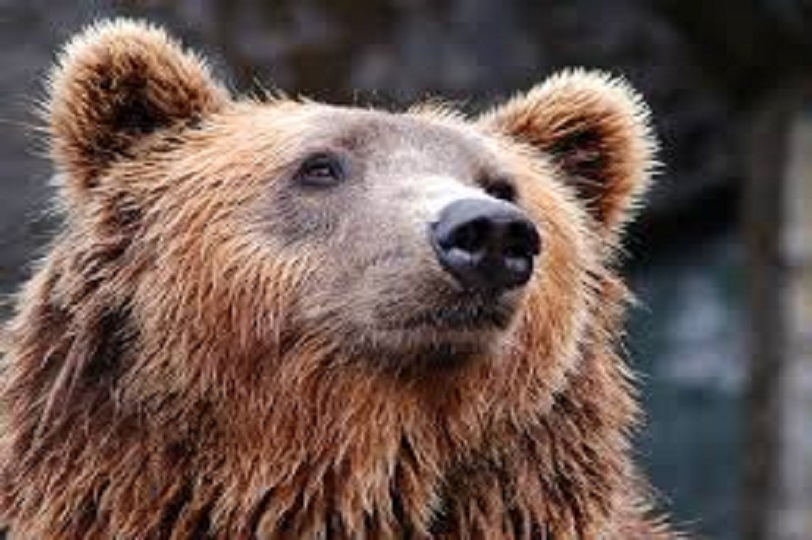
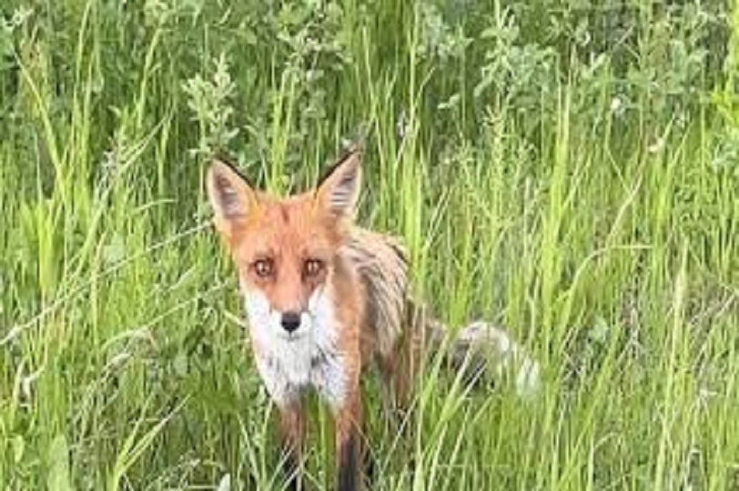
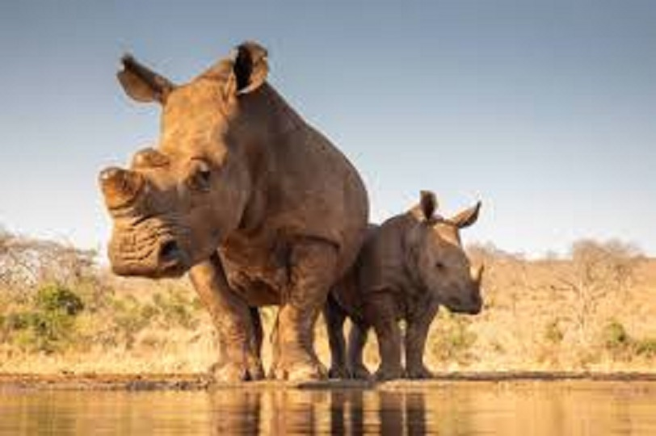
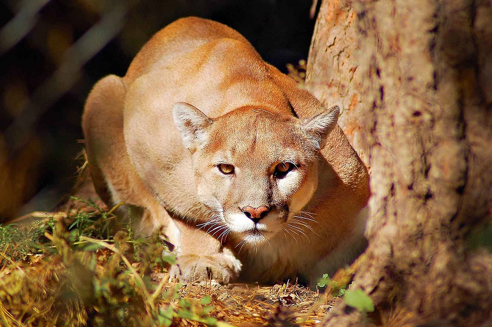

Кабан (или вепрь) — парнокопытное млекопитающее из рода кабанов семейства свиных. Является предком домашней свиньи.
Кабан — всеядное парнокопытное нежвачное млекопитающее из рода кабанов. Отличается от домашней свиньи, которая несомненно произошла от кабана (и других близких видов), обладает более коротким и плотным телом, более толстыми и высокими ногами; кроме того, голова у кабана длиннее и тоньше, уши длиннее, острее и притом стоячие. Постоянно растущие верхние и нижние клыки, торчащие изо рта вверх, у самца гораздо более развиты, чем у самки.
Ареал кабанов самый широкий среди всего семейства свиней и один из широчайших среди наземных млекопитающих. Дикие кабаны водятся в широколиственных (буковых и дубовых) и смешанных лесах материковой Средней Европы (от Атлантики до Урала); в Средиземноморье, включая также отдельные районы Северной Африки, в том числе горы Атлас и Киренаику (в древности его ареал доходил вдоль долины Нила до Хартума на юге).
Бурый медведь (или обыкновенный медведь) — млекопитающее семейства медвежьих; один из самых крупных наземных хищников и один из самых распространённых представителей семейства медвежьих.
Сейчас бурый медведь продолжает восстанавливать популяцию на большей части ареала; в остальных областях малочислен. В Западной Европе его разобщённые популяции сохранились на Пиренеях, Кантабрийских горах, Альпах и Апеннинах. Довольно распространён в Скандинавии и Финляндии, встречается в лесах Центральной Европы и в Карпатах. В Финляндии бурый медведь объявлен национальным животным.
Бурый медведь внесён в Красную книгу МСОП со статусом «вид, находящийся под угрозой», однако его численность сильно разнится от популяции к популяции. Наибольшая популяция обитает в России — свыше 300 000 особей, в США — 32 500(95 % живёт на Аляске) и Канаде — 21 750. В Европе сохранилось около 14 000 особей. К 2001 году в европейской части России популяция бурого медведя увеличилась и с тех пор постоянно растёт, в то время как на Кавказе и в Средней Азии напротив, численность уменьшилась.
Лисы — это мелкие или средние хищные млекопитающие из семейства псовых (Canidae). Наиболее известным представителем является красная лиса (Vulpes vulpes), распространенная в разных уголках мира.
Лисы имеют стройное тело, длинный пушистый хвост и острые уши. Их шерсть может варьироваться по цвету от рыжего до серого, черного и белого в зависимости от вида.
Лисы обитают в различных экосистемах, включая леса, степи, пустыни и даже городские районы. Они хорошо адаптируются к изменениям среды обитания.
Носороги — это крупные млекопитающие, принадлежащие к семейству носороговых (Rhinocerotidae). Существует пять основных видов носорогов, каждый из которых обладает уникальными чертами.
Существует пять видов носорогов: белый носорог, черный носорог, индийский носорог, яванский носорог и суматранский носорог. Каждый вид отличается по размеру, форме рога и среде обитания.
Носороги одни из самых крупных наземных млекопитающих. Взрослый белый носорог может весить до 2,5 тонн, а индийский носорог — около 2 тонн.
Пума выглядит сильной кошкой, у нее очень гибкое тело, с длинным мускулистым хвостом. Лапы приспособлены для лазания по деревьям. Пума имеет короткую и густую шерсть.
Длина тела пумы 100-180 см, длина хвоста 60-75 см. Высота в холке 60-90 см, вес пумы может достигать 100 кг. Примечательно, что самцы значительно крупнее самок. Средний вес женских особей колеблется в пределах 30-50 кг, а мужских – 60-80 кг.
Пума – заграничный представитель больших диких кошек. Живет пума в Северной и Южной Америке, населяет довольно большую площадь, - от Юкона (Канада) до Патагонии (Южная Америка).
Еноты — это небольшие млекопитающие из семейства енотовых (Procyonidae), широко известные своим характерным внешним видом и юрким поведением.
Еноты имеют плотное тело, короткие ноги и мощные лапы. Их шерсть обычно серого или бурого цвета с характерным черным "маской" на лице и кольцевым хвостом.
В основном еноты распространены в Северной и Центральной Америке. Они обитают в разнообразных экосистемах, включая леса, парки, пригородные районы и даже городские пространства.
Рыси — род хищных млекопитающих семейства кошачьих, наиболее близкий к роду кошек.
Рысь — типичная кошка, хотя величиной с крупную собаку, которую отчасти напоминает своим укороченным телом и длинноногостью. Очень характерна голова рыси: сравнительно небольшая, округлая и очень выразительная. Рост обычной рыси достигает 55 см, канадской от 48 см до 56 см, а пиренейской — от 60 до 70 см. От других кошачьих рыси отличаются коротким хвостом и кисточками на концах ушей. Масса тела рыси от 10 до 20 кг.
В скандинавской традиции рысь была священным животным богини Фрейи. Считалось, что рыси впряжены в её колесницу, но на самом деле это были кошки породы Норвежская лесная, похожие на рысь, или их предки лесные коты, чей ареал достигал Ютландии и Шотландии. Древние греки верили, что острый взор рыси способен пронзать насквозь непрозрачные предметы.
Слоны — это крупнейшие наземные млекопитающие, относящиеся к семейству слоновых (Elephantidae). Слоны известны своим впечатляющим размером, умом и социальным поведением.
Существует три основных вида слонов — африканский слон (Loxodonta africana), африканский лесной слон (Loxodonta cyclotis) и индийский слон (Elephas maximus). Африканские слоны крупнее, имеют большие уши и более изогнутые бивни, чем индийские.
Слоны могут достигать высоты до 4 метров в плечах и весить до 7 тонн (африканские слоны). Индийские слоны несколько меньше, достигая веса до 5 тонн.
Бурый медведь (или обыкновенный медведь) — млекопитающее семейства медвежьих; один из самых крупных наземных хищников и один из самых распространённых представителей семейства медвежьих.
Сейчас бурый медведь продолжает восстанавливать популяцию на большей части ареала; в остальных областях малочислен. В Западной Европе его разобщённые популяции сохранились на Пиренеях, Кантабрийских горах, Альпах и Апеннинах. Довольно распространён в Скандинавии и Финляндии, встречается в лесах Центральной Европы и в Карпатах. В Финляндии бурый медведь объявлен национальным животным.
Бурый медведь внесён в Красную книгу МСОП со статусом «вид, находящийся под угрозой», однако его численность сильно разнится от популяции к популяции. Наибольшая популяция обитает в России — свыше 300 000 особей, в США — 32 500(95 % живёт на Аляске) и Канаде — 21 750. В Европе сохранилось около 14 000 особей. К 2001 году в европейской части России популяция бурого медведя увеличилась и с тех пор постоянно растёт, в то время как на Кавказе и в Средней Азии напротив, численность уменьшилась.
Бурый медведь (или обыкновенный медведь) — млекопитающее семейства медвежьих; один из самых крупных наземных хищников и один из самых распространённых представителей семейства медвежьих.
Сейчас бурый медведь продолжает восстанавливать популяцию на большей части ареала; в остальных областях малочислен. В Западной Европе его разобщённые популяции сохранились на Пиренеях, Кантабрийских горах, Альпах и Апеннинах. Довольно распространён в Скандинавии и Финляндии, встречается в лесах Центральной Европы и в Карпатах. В Финляндии бурый медведь объявлен национальным животным.
Бурый медведь внесён в Красную книгу МСОП со статусом «вид, находящийся под угрозой», однако его численность сильно разнится от популяции к популяции. Наибольшая популяция обитает в России — свыше 300 000 особей, в США — 32 500(95 % живёт на Аляске) и Канаде — 21 750. В Европе сохранилось около 14 000 особей. К 2001 году в европейской части России популяция бурого медведя увеличилась и с тех пор постоянно растёт, в то время как на Кавказе и в Средней Азии напротив, численность уменьшилась.